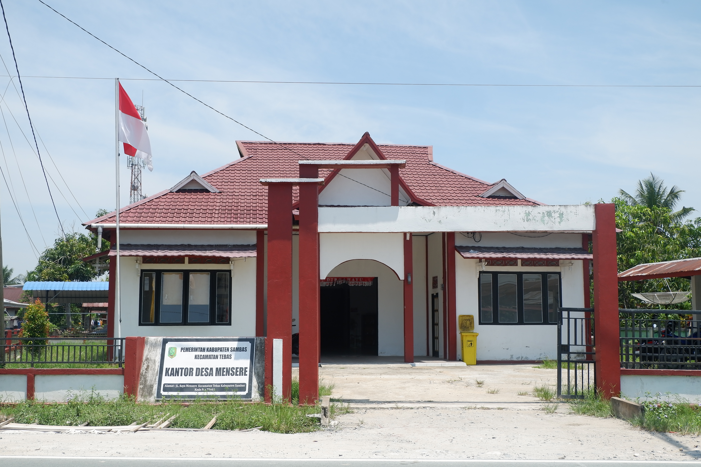

Gotong Royong
Kegiatan rutin membersihkan fasilitas umum dan lingkungan yang dilakukan bersama seluruh warga.
Selamat datang di laman digital kami
Mengenal lebih dekat kampung halaman, kehidupan masyarakat, budaya, kegiatan, dan potensi yang kami miliki.
Identitas Kampung
Data administratif singkat mengenai wilayah kami.
Mengenal Kami
Sejarah, arah pandang, dan keseharian masyarakat kampung kami.

desa mensere berdiri sejak tahun 1952, dirintis oleh sekelompok keluarga petani yang membuka lahan di lembah subur ini. Nama "mensere bawah" dipilih sebagai doa dan harapan agar kampung terus tumbuh, maju, dan sejahtera dari generasi ke generasi. Hingga kini, nilai gotong royong yang diwariskan para pendiri kampung masih menjadi pegangan hidup bersama warga.
Secara historis, penamaan wilayah "Mensere Bawah" merujuk pada area pemukiman yang posisinya berada di bagian hilir atau area yang lebih dekat dengan aliran sungai/akses transportasi utama pada masa lampau, jika dibandingkan dengan wilayah Mensere Atas yang berada di daratan lebih tinggi.
Mewujudkan desa mensere yang mandiri, guyub, asri, dan sejahtera berlandaskan gotong royong serta pelestarian budaya lokal.
Data & Statistik
Gambaran jumlah penduduk dan wilayah administratif kampung.
Bersama & Bergotong Royong
Beragam kegiatan rutin yang menghidupkan kebersamaan warga.
Kegiatan rutin membersihkan fasilitas umum dan lingkungan yang dilakukan bersama seluruh warga.
Perbaikan jalan, saluran air, dan fasilitas kampung dilakukan secara swadaya oleh warga.
Pertandingan voli, sepak bola, dan senam bersama rutin diadakan setiap akhir pekan.
Pengajian, kebaktian, dan peringatan hari besar keagamaan rutin diselenggarakan di kampung.
Perayaan hari kemerdekaan, syukuran panen, dan acara adat digelar meriah setiap tahun.
Karang taruna aktif mengadakan pelatihan, olahraga, dan kegiatan sosial bagi generasi muda.
Sumber Daya
Sektor unggulan yang menjadi tulang punggung ekonomi warga.
Padi, jagung, dan palawija menjadi hasil utama sawah dan ladang warga.
Kebun jeruk , dan buah-buahan dikelola turun-temurun oleh warga.
Ternak sapi, kambing, dan unggas menjadi sumber penghasilan tambahan.
Kolam ikan air tawar dikembangkan warga di sepanjang aliran sungai kampung.
Warung, kerajinan tangan, dan usaha rumahan tumbuh subur di kampung.
Keripik singkong, gula aren, dan anyaman bambu menjadi produk khas kampung.
Warisan Leluhur
Kekayaan adat yang terus dijaga dan diwariskan.
Musyawarah adat dan upacara siklus hidup masih dijalankan sesuai kebiasaan leluhur.
Selamatan panen dan bersih kampung digelar setiap tahun sebagai wujud syukur.
bubur pedas, gudeg kampung, dan wedang jahe menjadi hidangan khas yang selalu dirindukan.
Kesenian kuda lumping dan gamelan rutin tampil dalam setiap perayaan kampung.
Egrang, gobak sodor, dan kelereng masih dimainkan anak-anak kampung hingga kini.
Sudut Kampung
Lokasi-lokasi yang menjadi kebanggaan yang ada di desa mensere.
ini adalah perkebunan yang ada di desa mensere .
Pusat kegiatan olahraga dan acara besar kampung, dari lomba 17 Agustus hingga pasar malam.
bapak kasmir anwar atau biasa di panggil kemer adalah kepala desa mensere.
nama saya syarif putra aditiya saya pembuat website ini.

Tempat berkumpul warga untuk musyawarah, pengajian, dan berbagai pertemuan rutin.
mts at taqwa adalah asal sekolah saya .
Dokumentasi
Kumpulan momen dan suasana kampung dari waktu ke waktu. Klik foto untuk memperbesar.
Kabar desa mensere
Rangkuman kegiatan dan peristiwa terbaru di desa kami mensere.
Warga bersama-sama membersihkan jalan dan fasilitas umum menjelang peringatan HUT RI di lapangan kampung.
Baca Selengkapnya
Musim panen tahun ini membawa hasil melimpah, warga menggelar syukuran bersama di balai kampung.
Baca SelengkapnyaPemuda kampung mengikuti pelatihan anyaman bambu untuk mengembangkan produk UMKM lokal.
Baca SelengkapnyaTemukan Kami
Silakan ganti URL iframe di bawah dengan tautan Google Maps kampung Anda.
Hubungi Kami
Kami senang mendengar pertanyaan, masukan, atau kunjungan dari Anda.